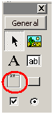
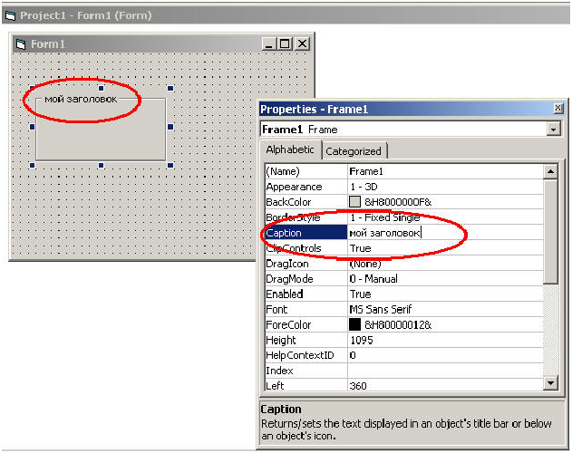
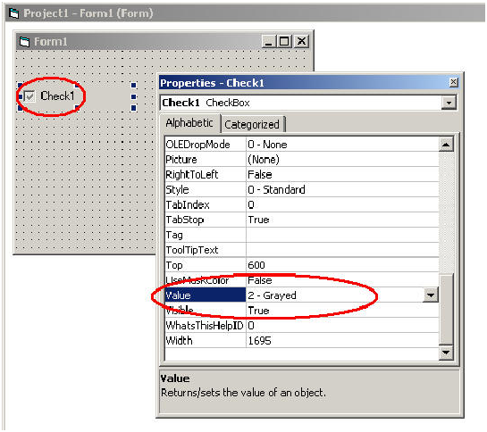
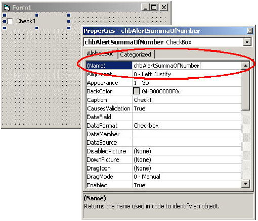
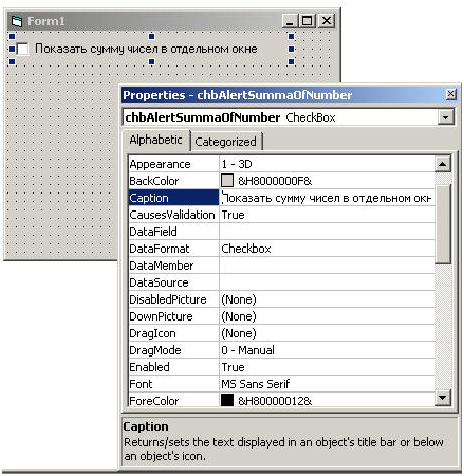
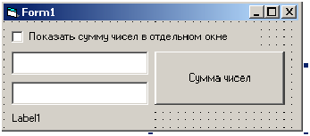
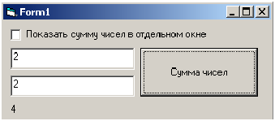
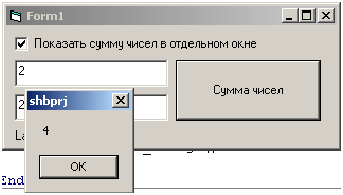

июля 6, 2015
июля 6, 2015  admin
admin VBA. Пример обзора компонентов: TextBox, Frame, CheckBox.
июля 6, 2015 admin
Рассмотрим на примере следующие элементы управления: TextBox, Frame, CheckBox. Их взаимосвязь и взаимодействие.
Более подробно о TextBox мы описывали в статье.
Следующий компонент – Frame*

Это просто рамка. Она имеет надпись – свойство Caption. Меня его, вы меняете заголовок рамки:

Переходим к следующему компоненту CheckBox. Это флажок. Он имеет три состояния:

Теперь давайте сделаем небольшой пример с флажком. И так, поместите компонент CheckBox на форму, присвойте ему имя chbAlertSummaOfNumber

Заголовок у флажка сделайте “Показать сумму чисел в отдельном окне”:*

Затем положите на форму два поля ввода, присвойте ими имена Number1 и Number2. Так же добавьте кнопочку (btnResult) и метку (lbResut):*

Теперь пишем обработчик события для кнопки “Сумма чисел”:
Private Sub btnResult_Click()
If chbAlertSummaOfNumber.Value = 1 Then
MsgBox Val(Number1.Text) + Val(Number2.Text)
Else
lbResult.Caption = Val(Number1.Text) + Val(Number2.Text)
End If
End Sub
При нажатии на кнопку, в зависимости от установленной галочки, сумма у нас будет выведена на экран сумма чисел: либо в том же окне

либо в другом окне:
